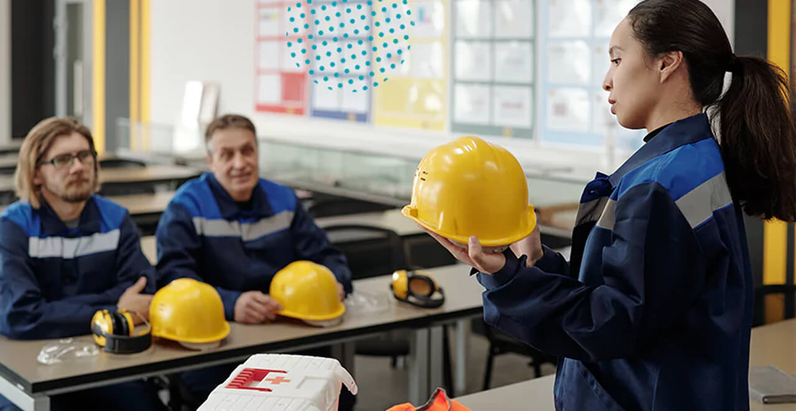
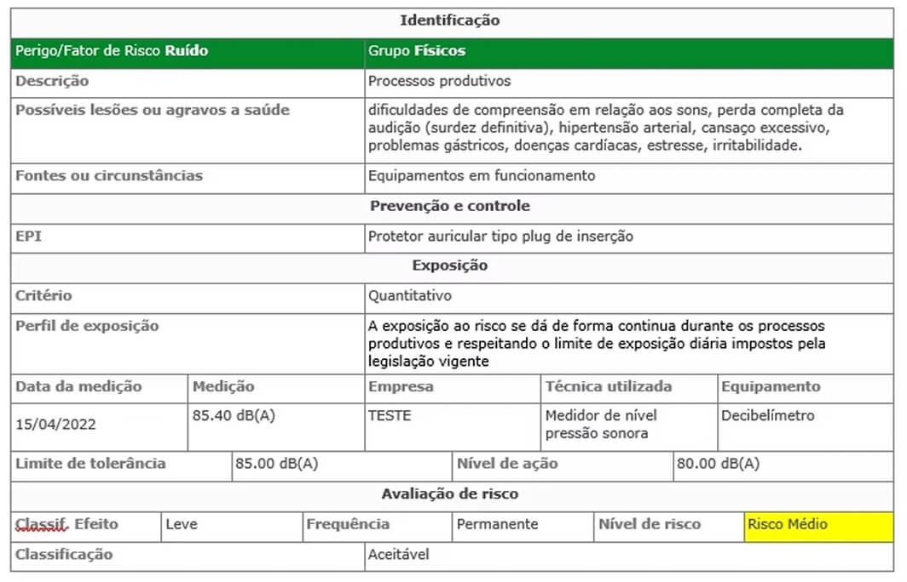
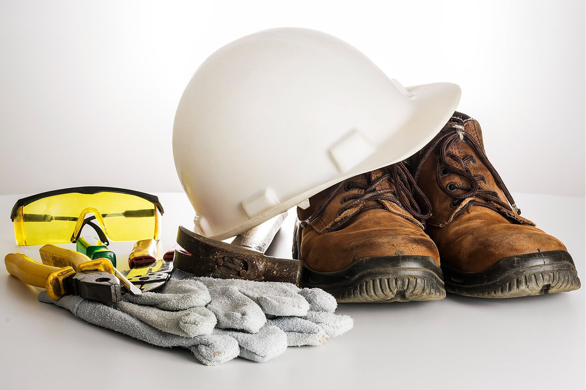
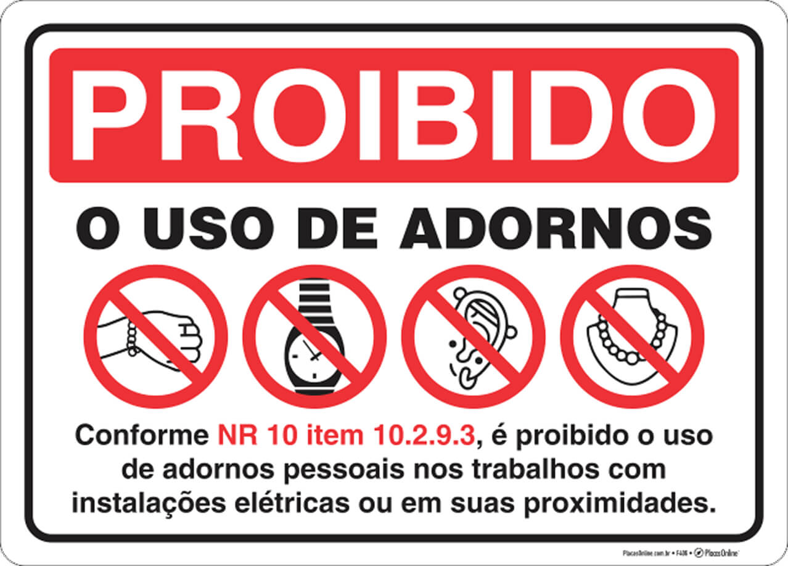

TRABALHO NR10, NR6
Segurança em instalações e serviços em eletricidade
Discusão e análise das partes 10.2.9 e 10.3 da norma NR10, para a disciplina de sistemas eletronicos prediais.
10.2.9
MEDIDAS DE PROTEÇÃO INDIVIDUAL
O tópico 10.2.9 da NR10 trata dos procedimentos e medidas de controle para trabalhos em instalações elétricas energizadas. Ele estabelece as condições mínimas para execução segura, como análise de risco, capacitação da equipe e uso de EPIs/EPCs.
Além disso, exige autorização formal para serviços em circuitos energizados e a supervisão por profissional qualificado. O objetivo é garantir a segurança dos trabalhadores e prevenir acidentes com eletricidade.


10.2.9.1
Em trabalhos de instalações elétricas quando as medidas de proteção coletiva (EPCs) forem insuficientes para garantir segurança dos trabalhadores, devem ser aplicadas medidas para a utilização de EPIS (equipamentos de proteção individual).
Estes devem ser utilizados de forma específica e adequada de acordo com a atividade exercida em atendimento ao disposto na NR 6.
NR6
EQUIPAMENTOS DE PROTEÇÃO INDIVIDUAL - EPI
O tópico 10.2.9.1 da norma NR10 tem um link direto com a norma NR6, É necessário analisar o conteúdo da norma NR6 para entendermos o que uma organização precisa para disponibilizar EPI para os seus funcionários.
A Norma NR6 foi criada em 8 de junho de 1978 por meio da Portaria MTb nº 3.214, pelo Ministério do Trabalho e Emprego (MTE). com o objetivo de estabelecer os requisitos mínimos para Equipamentos de Proteção Individual (EPIs) no Brasil.
Sua criação visa garantir a segurança e saúde dos trabalhadores, obrigando os empregadores a fornecerem EPIs adequados aos riscos ocupacionais, desde que as medidas de proteção coletiva não sejam suficientes.
A norma também regula a certificação, qualidade e uso correto dos equipamentos, assegurando sua eficácia na prevenção de acidentes e doenças laborais.
A NR6 é citada diretamente na parte 10.2.9.1, como forma de adição ao texto da norma. Cujo objetivo é a comercialização, fornecimento e utilização de equipamentos de proteção individuais, EPI.
Para prevenir acidentes de trabalho, a Norma Regulamentadora NR-6 desempenha um papel crucial. Aborda a obrigatoriedade e especificações de equipamentos de proteção individual (EPIs) que são essenciais na garantia da segurança dos trabalhadores, protegendo os trabalhadores de possíveis perigos e riscos no ambiente de trabalho. A norma estabelece que as empresas são obrigadas a fornecer aos seus empregados, gratuitamente, EPI adequado ao risco e em perfeito estado de conservação e funcionamento.
Portanto, é crucial a conscientização e o cumprimento da NR-6 por parte das empresas e trabalhadores. A preservação da saúde e a prevenção de acidentes no ambiente de trabalho dependem fortemente da adoção dessas medidas de segurança.
Essa norma se aplica às organizações que adquirem EPI, aos trabalhadores que os utilizam, aos fabricantes e importadores. Os fabricantes e importadores são considerados apenas no território nacional, assumindo responsabilidade pela fabricação, desempenho, garantia e assistência técnica do EPI.
NR6
COMERCIALIZAÇÃO E UTILIZAÇÃO
Os EPIs de fabricação nacional só podem ser postos a venda ou utilizados caso possuam o certificado de aprovação CA, expedido pelo órgão de âmbito nacional de segurança e saúde no trabalho.
O Certificado de Aprovação (CA) é um documento emitido pelo Ministério do Trabalho e Emprego que atesta que um Equipamento de Proteção Individual (EPI) está em conformidade com as exigências da NR-6 e pode ser comercializado ou utilizado com segurança.
NR6
RESPONSABILIDADES DA ORGANIZAÇÃO
As empresas precisam garantir os seguintes requisitos quanto aos EPIS Adquirir apenas EPI que sejam aprovados pelo órgão de âmbito nacional no caso o Ministério do Trabalho e Emprego que atesta que o EPI é seguro para uso.
Fornecer treinamento e orientação para o empregado sobre o uso do EPI.
Fornecer de forma gratuita o EPI adequado ao risco que o empregado pode vir a sofrer no ambiente de trabalho, e o equipamento deve estar em perfeito estado de conservação e funcionamento.
Ter o registro do fornecimento dos EPIs ao empregado seja por meio de fichas, livros, ou sistema eletrônico.
Deve exigir o seu uso no ambiente de trabalho, fiscalizar se os empregados estão utilizando os EPIs corretamente no ambiente de trabalho.
Tem a responsabilidade de higienizar, e fazer manutenção periódica quando aplicáveis esses procedimentos de acordo com as informações fornecidas pelo fabricante.
Substituir imediatamente os EPI quando estes fore m danificados ou extraviados.
Comunicar o órgão regulamentador caso seja constatada alguma irregularidade.
As embalagens originais dos EPI devem ser mantidas para futuras identificações do produto, nome do fabricante ou importador, lote, validade e CA do EPI.
Os EPIS devem ser selecionados considerando:
- Atividade exercida
- Identificar perigos e riscos ocupacionais avaliados e com isso ter as medidas de prevenção
- Medida da eficácia necessária para o controle da exposição ao risco
- Estar atento às exigências das normas regulamentadoras
- A adequação do equipamento ao empregado e o conforto oferecido.
- Compatibilidade em casos que exijam a utilização simultânea de vários EPI.
A seleção do EPI deve ser registrada, sendo integrada ou referenciada no Programa de gerenciamento de riscos - PGR
NR6
PGR - PROGRAMA DE GERENCIAMENTO DE RISCOS
SOBRE O PGR
O PGR, ou Programa de Gerenciamento de Riscos, é um documento que as empresas devem elaborar e implementar para identificar, avaliar e controlar os riscos ocupacionais presentes no ambiente de trabalho. Seu objetivo principal é garantir a segurança e saúde dos trabalhadores, evitando acidentes e doenças ocupacionais.
Exemplo modelo documento PGR
Como elaborar o conteúdo do documento PGR?
Identificação dos Riscos:
O PGR começa com a identificação de todos os perigos e riscos presentes no ambiente de trabalho, como riscos físicos (ruído, vibração), químicos (substâncias tóxicas), biológicos (bactérias, vírus), ergonômicos (posturas inadequadas) e mecânicos (máquinas).
Avaliação dos Riscos:
Após a identificação, os riscos são avaliados em termos de probabilidade de ocorrência e gravidade dos seus efeitos.
Planejamento de Ações:
Com base na avaliação, são planejadas ações para controlar ou eliminar os riscos, como uso de equipamentos de proteção individ ual (EPI), modificações no ambiente de trabalho, treinamento dos trabalhadores, entre outros.
Documentação:
O PGR deve ser documentado, incluindo o inventário de riscos, o plano de ação e demais informações relevantes.
Importância:
Proteção dos Trabalhadores:
O PGR é fundamental para garantir a saúde e segurança dos trabalhadores, reduzindo o risco de acidentes e doenças ocupacionais.
Cumprimento da Legislação:
A implementação do PGR é uma exigência legal, prevista na Norma Regulamentadora 1 (NR-1).
Melhoria da Produtividade:
Um ambiente de trabalho seguro e saudável contribui para a melhoria da produtividade e do clima organizacional.
Redução de Custos:
A prevenção de acidentes e doenças ocupacionais reduz os custos com tratamento médico, afastamentos e outras despesas.
Em resumo, o PGR é uma ferramenta essencial para as empresas que buscam um ambiente de trabalho mais seguro, saudável e produtivo, garantindo a proteção dos seus trabalhadores e o cumprimento da legislação em vigor.
Para selecionar os EPI deve ser feito com a participação do serviço especializado em Engenharia de Segurança e medicina do Trabalho SESMT.
E a seleção, uso e manutenção ainda deve considerar os programas e regulamentações relacionadas a EPI.
NR6
CONSEQUENÇIAS DO DESCUMPRIMENTO DA NR6 PELA ORGANIZAÇÃO
A Norma Regulamentadora NR 6 estabelece as obrigações dos empregadores em relação ao fornecimento e uso adequado de Equipamentos de Proteção Individual (EPIs) aos trabalhadores. Caso o empregador infrinja essa norma, ele pode sofrer diversas consequências legais, trabalhistas e administrativas, incluindo:
Multas e Penalidades Administrativas
Fiscalização do MTE (Ministério do Trabalho e Emprego):
- O não fornecimento de EPIs adequados ou a exigência de que o trabalhador arque com os custos dos EPIs pode resultar em autuação e multas conforme a legislação trabalhista.
- O valor da multa varia conforme a infração, podendo ser multiplicado por cada trabalhador afetado.
Responsabilidade Trabalhista
Ações Judiciais e Reclamações:
- O empregado pode entrar com uma Reclamação Trabalhista exigindo o fornecimento dos EPIs, indenização por danos morais ou materiais e até rescisão indireta (quando a falta de EPI configura quebra contratual grave).
- Se o trabalhador sofrer um acidente por falta de EPI, o empregador pode ser responsabilizado civil e criminalmente.
Responsabilidade Criminal (em casos graves)
Art. 132 do Código Penal (CP):
- Se a falta de EPI colocar em risco a vida ou a saúde do trabalhador, o empregador pode ser enquadrado no crime de "Perigo para a Vida ou Saúde de Outrem", com pena de detenção de 3 meses a 1 ano.
- Lei nº 6.367/1976 (Crimes contra a Segurança do Trabalho):
- Em casos de acidentes graves ou fatais, o empregador pode responder por crime ambiental ou de negligência.
Aumento de Custos com Acidentes de Trabalho
Encargos com SAT (Seguro de Acidente de Trabalho):
- Empresas com alto índice de acidentes podem ter um aumento no valor do SAT, impactando financeiramente a organização.
Danos à Imagem da Empresa
- Problemas com clientes, fornecedores e mercado
- Empresas que não cumprem as normas de segurança podem sofrer perda de contratos e dificuldade em licitações públicas.
O que o Empregador Deve Fazer para Evitar Problemas?
- Fornecer EPIs adequados e certificados (CA) gratuitamente.
- Treinar os trabalhadores sobre o uso correto dos EPIs.
- Fiscalizar e substituir os EPIs danificados.
- Manter registros de entrega (como fichas ou recibos).
Concluimos que o não cumprimento das disposições da NR-6 pode acarretar graves consequências jurídicas e financeiras para o empregador, incluindo aplicação de multas administrativas e até mesmo responsabilização criminal. Diante disso, a rigorosa observância das normas de segurança do trabalho configura-se como imperativo legal e ético.
No cenário brasileiro, ainda é frequente a identificação de empresas e empregadores que desconhecem a existência ou relevância das Normas Regulamentadoras de segurança. Há ainda casos em que, mesmo cientes das obrigações legais, optam por não cumpri-las, demonstrando grave negligência quanto à proteção da integridade física de seus colaboradores.
Organizações que negligenciam a análise de riscos ocupacionais e deixam de fornecer os Equipamentos de Proteção Individual (EPIs) adequados devem ser imediatamente reportadas aos órgãos fiscalizadores competentes.
Recomenda-se que o trabalhador, ao identificar situações de risco, adote o seguinte procedimento:
- Comunique formalmente à empresa sobre os riscos identificados
- Solicite a implementação das medidas de proteção cabíveis
- Caso não haja pronta adequação, documente minuciosamente as irregularidades (com provas materiais, registros fotográficos e testemunhos)
- Busque orientação jurídica para defender seus direitos
Observa-se, lamentavelmente, uma cultura de conformismo entre parte dos trabalhadores, que, por receio de represálias, demissão ou assédio moral, abstêm-se de reivindicar seus direitos fundamentais à segurança no trabalho. Essa postura passiva acaba por perpetuar condições laborais inadequadas e potencialmente perigosas.
É fundamental romper com esse ciclo de omissão e exigir ativamente a implementação de condições de trabalho seguras e saudáveis. Todo trabalhador deve solicitar formalmente os EPIs necessários e, diante da inércia empregatícia, recorrer aos canais de denúncia disponíveis. A legislação trabalhista brasileira oferece amplo amparo jurídico para garantir o direito fundamental à segurança e qualidade de vida no ambiente de trabalho.
NR6
RESPONSABILIDADES DO TRABALHADOR
O trabalhador deve arcar com as seguintes obrigações,
- Usar os EPI fornecidos pela organização
- Utilizar apenas para a finalidade que se destina
- Responsabilizar-se pela limpeza, guarda e conservação
- Comunicar a organização caso haja extravio, danos ou qualquer alteração que o torne impróprio para uso.
- Cumprir as determinações da organização sobre o uso adequado
A organização deve fornecer treinamento sobre as informações de recomendação de uso do EPI de acordo com o manual de instruções do fabricante ou importador.
Elaboração:
A NR-6 estabelece as responsabilidades do empregador e do empregado em relação aos Equipamentos de Proteção Individual (EPIs). O empregador tem a obrigação de fornecer, treinar e fiscalizar o uso dos EPIs, enquanto o empregado deve utilizá-los corretamente, responsabilizar-se pela guarda e conservação e comunicar qualquer alteração que os torne impróprios para uso.
NR6
CONSEQUENÇIAS DO DESCUMPRIMENTO DA NR6 PELO TRABALHADOR
Vale ressaltar que em caso de infração à NR-6 (EPIs), o empregado pode enfrentar consequências como advertência, suspensão e, em casos mais graves, justa causa para rescisão do contrato de trabalho. Além disso, o descumprimento da norma pode levar a ações judiciais e responsabilização civil e criminal, dependendo da gravidade da infração e dos resultados lesivos.
Advertência e Suspensão:
A empresa pode aplicar advertência e/ou suspensão ao empregado que não utilizar corretamente os EPIs, mesmo após orientação e treinamento.
Justa Causa:
Em casos de reincidência ou descumprimento grave da NR-6, o empregador pode demitir o empregado por justa causa.
Ações Judiciais:
Se o descumprimento da NR-6 levar a um acidente de trabalho ou doença ocupacional, o empregado pode ser responsabilizado civilmente ou criminalmente, dependendo da gravidade e da sua participação na ocorrência.
Responsabilidade Civil:
Em caso de acidente ou doença ocupacional, a empresa pode ser responsabilizada civilmente a indenizar o trabalhador por danos materiais, morais e estéticos, e o empregado que contribuiu para o acidente também pode ser responsabilizado.
Responsabilidade Criminal:
Se o descumprimento da NR-6 resultar em lesão grave ou morte do trabalhador, os responsáveis pela empresa (inclusive o empregado) podem responder criminalmente por seus atos ou omissões.
É importante ressaltar que a conscientização e o engajamento de todos os envolvidos são fundamentais para garantir a segurança no local de trabalho e o cumprimento das normas regulamentadoras.
NR6
LISTA DE EQUIPAMENTOS EPI
A segurança em serviços com eletricidade exige atenção redobrada e o uso correto de Equipamentos de Proteção Individual (EPIs) adequados. Choques elétricos, arcos voltaicos e queimaduras são riscos constantes, e a ausência dos EPIs certos pode levar a acidentes graves ou fatais.
Nesta seção, listaremos os 7 EPIs mais relevantes para profissionais da área elétrica, essenciais para garantir proteção conforme as normas regulamentadoras, incluindo a NR-6 e NR-10.
Seja em instalações, manutenções ou reparos, esses equipamentos são a barreira entre o trabalhador e os perigos invisíveis da eletricidade. Confira a seguir quais itens são indispensáveis para atuar com segurança e conformidade.
A - EPI PARA PROTEÇÃO DA CABEÇA
A.1 - Capacete:
- b - capacete para proteção contra choques elétricos
B - EPI PARA PROTEÇÃO DOS OLHOS E FACE
B.1 - Óculos:
- a - óculos para proteção dos olhos contra impactos de partículas volantes;
- b - óculos para proteção dos olhos contra luminosidade intensa;
- c - óculos para proteção dos olhos contra radiação ultravioleta;
- d - óculos para proteção dos olhos contra radiação infravermelha;
B.2 - Protetor facial:
- a - protetor facial para proteção da face contra impactos de partículas volantes;
- b - protetor facial para proteção dos olhos contra luminosidade intensa;
- c - protetor facial para proteção da face contra radiação infravermelha;
- d - protetor facial para proteção da face contra radiação ultravioleta;
- e - protetor facial para proteção da face contra agentes térmicos.
- B.3 - Máscara de solda para proteção dos olhos e face contra impactos de partículas volantes, radiação ultravioleta, radiação infravermelha e luminosidade intensa.
F - EPI PARA PROTEÇÃO DOS MEMBROS SUPERIORES
F.1 - Luvas:
- c - luvas para proteção das mãos contra choques elétricos;
F.3 - Manga:
- a - manga para proteção do braço e do antebraço contra choques elétricos
G - EPI PARA PROTEÇÃO DOS MEMBROS INFERIORES
G.1 - Calçado:
- b - calçado para proteção dos pés contra choques elétricos
H - EPI PARA PROTEÇÃO DO CORPO INTEIRO
H.2 - Vestimenta de corpo inteiro:
- b - vestimenta condutiva para proteção de todo o corpo contra choques elétricos
10.2.9.2
VESTIMENTAS ADEQUADAS
Cita sobre a importância da utilização de vestimentas adequadas às atividades exercidas. As vestimentas devem contemplar:
- Condutibilidade
- Inflamabilidade
- Influências Eletromagnéticas

Vestimentas a prova de condutibilidade
Vestimentas à prova de condutibilidade, também conhecidas como vestimentas condutivas, são roupas projetadas para igualar o potencial elétrico do corpo do usuário, protegendo contra choques elétricos, principalmente em ambientes de alta tensão. Elas são feitas de materiais que conduzem eletricidade, formando um circuito contínuo que evita a acumulação de carga elétrica no corpo.
Como funcionam as vestimentas condutivas:
Equalização do potencial elétrico:
A vestimenta condutiva conduz a eletricidade do corpo para o solo, impedindo que uma diferença de potencial entre o corpo e o chão cause um choque elétrico.
Proteção contra arcos elétricos:
Em ambientes com arcos elétricos, as vestimentas condutivas podem ajudar a evitar a ignição da roupa e proteger o usuário contra queimaduras.
Proteção contra campos eletromagnéticos:
Algumas vestimentas condutivas também oferecem proteção contra campos eletromagnéticos, que podem causar problemas de saúde.
Tipos de vestimentas condutivas:
- Jaquetas, calças e macacões: Podem ser feitos de tecidos condutivos ou ter elementos condutivos, como fios metálicos ou revestimentos especiais.
- Luvas, mitenes e meias: Protegem as mãos e os pés, evitando o contato com superfícies energizadas.
- Sapatos e botas com solados condutivos: Garantem a continuidade elétrica entre o corpo e o solo.
- Capuzes: Protegem a cabeça contra arcos elétricos.
- Vestimentas contra arco elétrico: Feitas de materiais resistentes a altas temperaturas e chamas, como tecidos Nomex. As roupas de EPI fabricadas com Nomex® oferecem proteção superior contra o calor, as chamas e o arco elétrico, fornecendo soluções leves e confortáveis que atendem às normas da indústria. O Nomex® é uma fibra inerentemente resistente a calor e chamas que não derrete, escorre ou promove a combustão, fornecendo uma barreira superior entre o que está dentro do perigo que está fora.
- Site do tecido Nomex: https://www.dupont.com.br/brands/nomex.html
Importância das vestimentas condutivas:
Segurança:
Proporcionam proteção contra choques elétricos e outros riscos elétricos, como arcos e campos eletromagnéticos.
Cumprimento da NR-10:
As vestimentas condutivas são um dos Equipamentos de Proteção Individual (EPIs) exigidos pela Norma Regulamentadora 10 (NR-10) para trabalhos em instalações elétricas.
Produtividade:
Ao garantir a segurança do trabalhador, as vestimentas condutivas contribuem para um ambiente de trabalho mais seguro e produtivo.
Como escolher a vestimenta condutiva:
Atividade:
A escolha da vestimenta condutiva deve ser adequada à atividade e aos riscos elétricos envolvidos.
Normas técnicas:
É importante verificar se a vestimenta condutiva atende às normas técnicas, como a ABNT NBR 16135 e a IEC 60895.
Qualidade do material:
A vestimenta condutiva deve ser feita de materiais de qualidade, resistentes e duráveis.
Estado de conservação:
É importante verificar o estado de conservação da vestimenta antes de utilizá-la, procurando por furos, rasgos ou outros defeitos que possam comprometer a proteção.
Vestimentas a prova de inflamabilidade
Vestimentas à prova de inflamabilidade, também conhecidas como vestimentas antichamas ou vestimentas FR (Flame Resistant), são roupas projetadas para proteger o usuário contra riscos de incêndio e exposição a altas temperaturas. Elas são fabricadas com materiais que não pegam fogo facilmente ou que não se propagam rapidamente em caso de contato com uma chama.
Características e Materiais:
Materiais:
As vestimentas anti chamas são frequentemente feitas de tecidos como Nomex, Kevlar e PBI, que possuem propriedades retardantes de chama.
Proteção:
A principal função das vestimentas anti chamas é proteger o usuário contra queimaduras e o risco de incêndio, proporcionando uma camada de proteção adicional.
Normas e Certificações:
Para garantir a segurança, as vestimentas anti chamas devem atender a normas e padrões específicos, como a Norma NFPA 2112, que estabelece requisitos de desempenho para roupas de proteção contra incêndio.
Tipos de Vestimentas Anti Chamas:
- Macacões: São uma opção completa para proteger o corpo inteiro.
- Jaquetas e calças: Permitem uma proteção mais segmentada.
- Roupa de Combate a Incêndio: Projetada para proteger bombeiros e outros profissionais que trabalham com incêndios.
Em quais situações são utilizadas?
Indústria:
Em áreas onde há riscos de incêndio, como refinarias, indústrias químicas e plantas de energia.
Laboratórios:
Em laboratórios que trabalham com materiais inflamáveis ou em áreas onde há risco de chamas.
Combate a Incêndio:
Por bombeiros e profissionais que atuam no combate a incêndios.
Outras áreas:
Em áreas de construção, soldagem, metalurgia e outras atividades que envolvem riscos de fogo.
Importância da Escolha:
Avaliação do risco:
A escolha da vestimenta anti chamas deve levar em consideração o tipo e a intensidade do risco de incêndio, bem como o tempo de exposição.
Certificação:
É fundamental verificar se a vestimenta possui as certificações necessárias para garantir a segurança do usuário.
Manutenção:
A vestimenta anti chamas deve ser mantida adequadamente para garantir sua eficácia.
Em resumo:
As vestimentas anti chamas são um equipamento de proteção individual essencial em diversas atividades e indústrias onde há risco de incêndio e queimaduras. Elas são projetadas para proteger o usuário contra as chamas e altas temperaturas, proporcionando uma camada de segurança adicional.
Vestimentas a prova de Influências Eletromagnéticas
Vestimentas de proteção contra influências eletromagnéticas (EMF) são roupas especialmente projetadas para reduzir a exposição a radiação eletromagnética emitida por dispositivos eletrônicos. Elas são feitas com materiais que criam uma barreira contra as ondas, como tecidos com fibras metálicas que funcionam como uma gaiola de Faraday, bloqueando ou desviando a radiação.
Como funcionam:
Tecidos com fibras metálicas:
A maioria das roupas de proteção EMF usa tecidos que incorporam fios de metal, como prata ou cobre, que criam uma rede condutiva que bloqueia as ondas eletromagnéticas.
Gaiola de Faraday:
O princípio da gaiola de Faraday é aplicado, onde as ondas eletromagnéticas são refletidas pela superfície condutiva da roupa em vez de serem absorvidas pelo corpo.
Benefícios:
Reduz exposição:
As roupas de proteção EMF reduzem a exposição do corpo à radiação eletromagnética, minimizando os riscos potenciais para a saúde.
Proteção contra dispositivos eletrônicos:
Elas podem ser usadas para proteger contra a radiação de telefones celulares, computadores, antenas de comunicação e outros dispositivos.
Conforto e praticidade:
As roupas de proteção EMF são geralmente projetadas para serem confortáveis e práticas de usar, permitindo que as pessoas se mantenham conectadas ao mundo digital sem comprometer a segurança.
Importância:
Saúde:
A exposição prolongada à radiação eletromagnética tem sido associada a diversos problemas de saúde, incluindo dores de cabeça, distúrbios de sono e outros sintomas, como destacou o MySilverShield.
Prevenção:
As roupas de proteção EMF oferecem uma forma preventiva de reduzir a exposição à radiação, ajudando a proteger a saúde e o bem-estar.
Trabalho:
Em ambientes de trabalho com alto uso de dispositivos eletrônicos, as roupas de proteção EMF podem ser particularmente importantes para garantir a segurança dos trabalhadores.
Onde encontrar:
Empresas especializadas: Diversas empresas vendem roupas de proteção EMF, como a MySilverShield.
Especialistas em saúde:
Médicos e outros profissionais de saúde podem fornecer mais informações sobre as roupas de proteção EMF e sua importância.
10.2.9.3
PROIBIDO O USO DE ADORNOS
A parte 10.2.9.3 na NR10 cita que é proibido o uso de adornos pessoais durante os trabalhos em instalações elétricas ou em suas proximidades, uma das explicações para essa parte é: A justificativa para isso tem a ver com esses acessórios causarem acidentes, como ao ficarem presos em escadas ou objetos pontiagudos presentes no local de trabalho.
Esta medida visa garantir a segurança do trabalhador, pois adornos como anéis, pulseiras e correntes podem conduzir eletricidade, causar choques, queimaduras ou ficar presos em equipamentos.
Justificativa para a proibição:
Condução de eletricidade:
Adornos metálicos podem criar um caminho para a corrente elétrica, aumentando o risco de choques e queimaduras.
Enroscamento e acidentes:
Adornos podem se enroscar em equipamentos, ferramentas, escadas ou outros objetos, causando acidentes.
Riscos em ambientes específicos:
Em setores como saúde, adornos podem acumular sujeira e microrganismos, representando riscos de contaminação, diz uma publicação do SINDHOESG.
Exceções:
Adornos feitos de materiais não metálicos, como couro, plástico ou papel, podem ser permitidos, desde que não apresentem risco de conduzir eletricidade ou causar outros acidentes.
Importância da NR-10:
A NR-10 é fundamental para garantir a segurança em trabalhos com eletricidade, estabelecendo medidas preventivas para evitar acidentes e proteger a vida dos trabalhadores. A proibição do uso de adornos é uma dessas medidas, que visa minimizar os riscos específicos que esses acessórios podem representar.